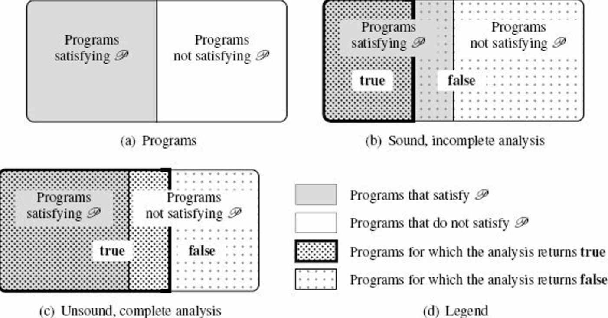

Motivations for static analysis
"before-use" analysis
analysis of a program that might be never terminating
halt such that, p ∈ 𝙻, halt(p) = true if and only if p terminatesp ∈ 𝙻, it returns true if and only if p satisfies the semantic property 𝒫.So how to design a program analysis ?
target a restricted class of programs: give up the "for every program p" part
not always being able to provide an exact answer: give up the "if and only if" part
Let analysis to be an analysis tool to determine whether this property holds:
p ∈ 𝙻, analysis(p) = true ⇔ p satisfies 𝒫.p ∈ 𝙻, analysis(p) = true ⇒ p satisfies 𝒫.p ∈ 𝙻, analysis(p) = true ⇐ p satisfies 𝒫.A sound program analysis satisfies the first implication.
analysis is sound with respect to property 𝒫 whenever, for any program p ∈ 𝙻, analysis(p) = true implies that p satisfies property 𝒫.A sound analysis will reject all programs that do not satisfy 𝒫.
good: well-typed programs will not present certain classes of errors
bad: certain programs that will never crash may still be rejected
The soundness is easy to meet; we can simply reject any program. Therefore, in practice, the design of a sound analysis will try to give a conclusive answer as often as possible.
analysis is complete with respect to property 𝒫 whenever, for every program p ∈ 𝙻, such that p satisfies 𝒫, analysis(p) = true.The completeness is also easy to meet; we can simply never reject any program. To be useful, a complete analyzer should often reject programs that don't satisfy the property of interest.

When a program analysis is automatic, it is either unsound or incomplete.
Testing: check a finite set of finite program executions
unsound and complete
good: easy, very close to the actual runtime
bad: may not terminate, may not be deterministic (e.g. concurrent programs), not feasible to fully observe all executions
xref: concolic testing to improve coverage and accuracy
Assisted Proof: rely on user-supplied invariants
2 basic approaches:
good: often sound to respect to the model of the program semantics used for the proof, also complete up to the abilities of the proof assistant to verify proofs
bad: non-automated, requires significant time and expertise
(Finite-State) Model Checking: exhaustive exploration of finite systems
use some kind of exhaustive (but efficient) enumeration and determine whether all executions satisfy the property of interest
good: automatic, sound and complete with respect to the model
caveat: verification is performed at the model level and not at the program level
a model of the program needs to be constructed (manually or by some automatic frontend means)
=> the checking of the synthesized model may be either incomplete or unsound, with respect to the input program (incompleteness or unsoundness is often introduced in the modeling stage)
often conservative: sound and incomplete with respect to the input program
Conservative Static Analysis: automatic, sound, and incomplete approach
idea: finitely over-approximate the set of all program behaviors using a specific set of properties
many existing trials
often sound and incomplete
we can think of unsound and complete static analysis
will answer very different kind of question
may guarantee that a given subset of the executions of the program can be observed, while it doesn't prove properties such as the absence of run-time errors
bug finding: Relaxed error search, automatic, unsound, incomplete, based on heuristics
simplify the design and implementation of analysis tools and to provide lighter-weight verification algorithms
can be used to improve the quality of non-critical programs at a low cost
examples:
automatic | soundness | completeness | object | when | |
|---|---|---|---|---|---|
testing | No | No | Yes | Program | Dynamic |
Assisted Proof | No | Yes | Yes/No | Model | Static |
Model Checking of finite-state model | Yes | Yes | Yes | Finite Model | Static |
Model Checking at program level | Yes | Yes | No | Program | Static |
Conservative Static Analysis | Yes | Yes | No | Program | Static |
bug finding | Yes | No | No | Program | Static |